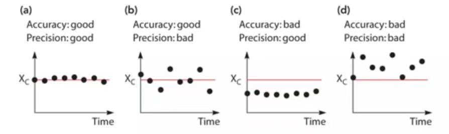
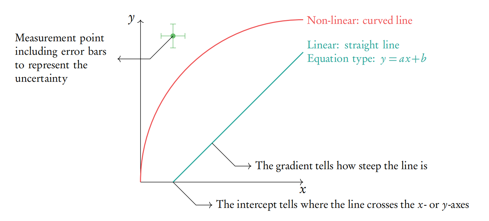
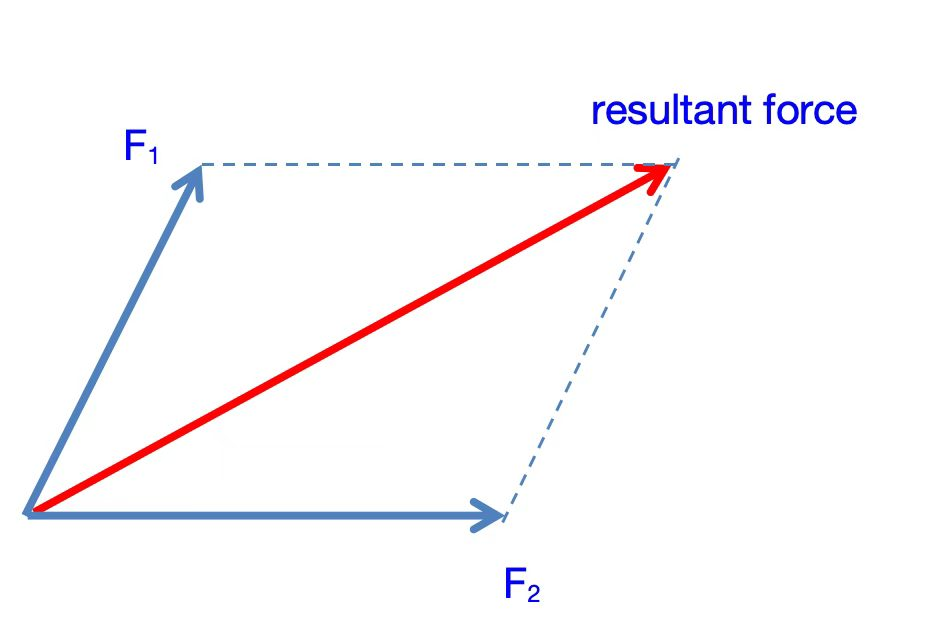
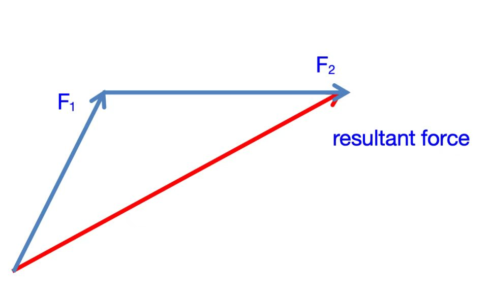
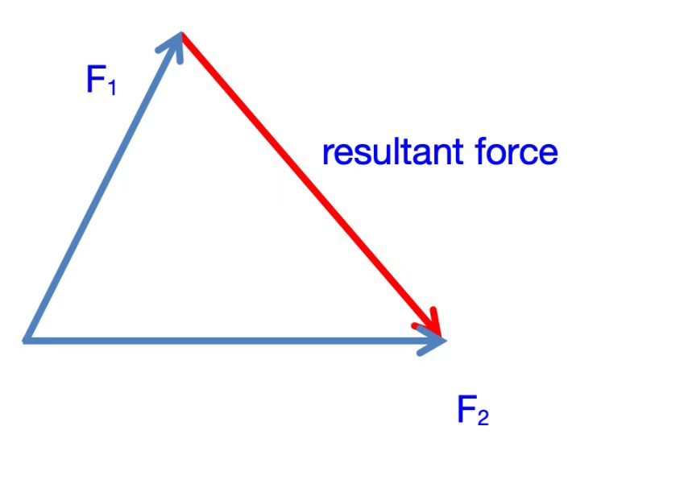
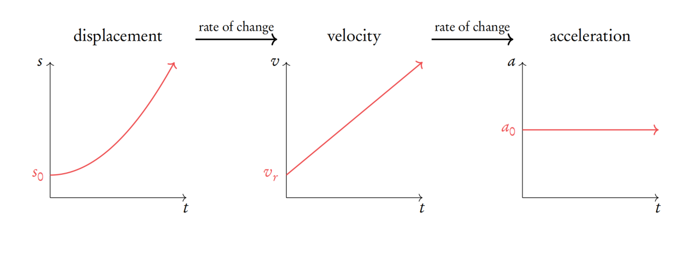
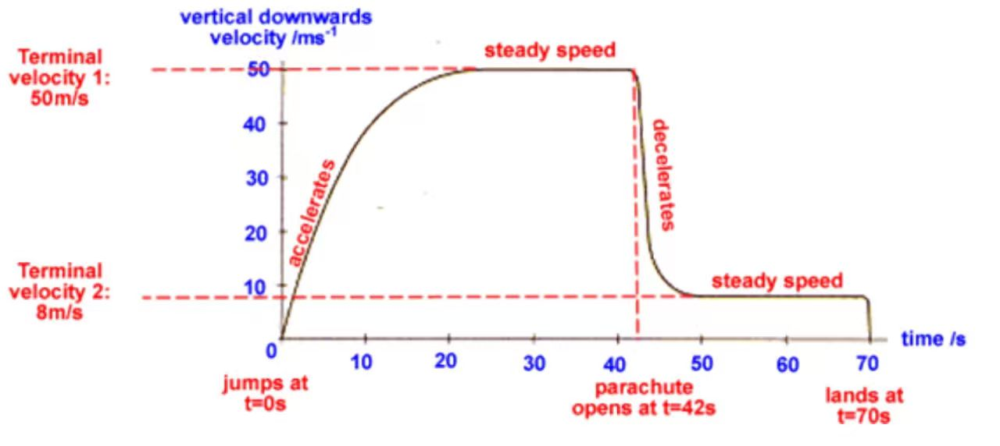

主题一 · 测量与数学基础
1物理量的基本单位
量纲齐次性（Homogeneity）
如果一个方程左边的基本单位与右边的基本单位相同，则该方程是量纲齐次的。
常见例子
| 物理量 |
导出单位 |
用基本单位表示 |
来源公式 |
| 力 (Force) |
1 N |
$1\ \text{kg}\,\text{m}\,\text{s}^{-2}$ |
$F = ma$（$m$: kg，$a$: m s⁻²） |
| 能量 (Energy) |
1 J |
$1\ \text{kg}\,\text{m}^{2}\,\text{s}^{-2}$ |
$E = \tfrac{1}{2}mv^2$（$m$: kg，$v$: m/s） |
| 压强 (Pressure) |
1 Pa |
$1\ \text{kg}\,\text{m}^{-1}\,\text{s}^{-2}$ |
$p = \dfrac{F}{A}$ |
量纲齐次性可用来检验公式是否正确：若两边基本单位不一致，公式一定有误。
2误差
系统误差（含零点误差）
每次重复实验时都相同，会把所有数值朝同一方向偏移相同的量。
- 由所用仪器或其设置方式引起。
- 影响准确度（accuracy），不影响精确度。
- 方向恒定，无法通过重复或求平均消除。
随机误差
使得每次重复实验的结果略有不同。
- 影响精确度（precision）。
- 表现为围绕真值的随机波动或离散。
- 可以通过多次重复并求平均来减小。
3准确度与精确度
下图展示了多次测量结果围绕真值 $X_c$（红线）的四种情况，帮助区分准确度（与真值的接近程度）与精确度（测量值之间的离散程度）。

(a) 准确度好、精确度好 (b) 准确度好、精确度差 (c) 准确度差、精确度好 (d) 准确度差、精确度差
| 情况 |
准确度 Accuracy |
精确度 Precision |
说明 |
| (a) | 好 | 好 | 数据点既接近真值，又彼此集中（理想情况）。 |
| (b) | 好 | 差 | 平均值接近真值，但数据点离散 → 随机误差大。 |
| (c) | 差 | 好 | 数据点集中但整体偏离真值 → 系统误差大。 |
| (d) | 差 | 差 | 既偏离真值又离散 → 系统误差与随机误差都大。 |
记忆要点：系统误差影响准确度（偏离真值），随机误差影响精确度（数据离散）。
4不确定度（Uncertainty）
单次读数的不确定度为测量仪器最小分度的一半（$\pm\tfrac{1}{2}$ 格）。
测量值与真值之间的最大差值，称为误差范围（margin of error）。
不确定度的合成计算
| 情况 | 处理方法 |
|---|
同类型测量
（单位相同，做加减） |
总的绝对不确定度 = 各测量值绝对不确定度之和。 |
不同类型测量
（出现在同一公式中，做乘除） |
先求各量的百分比不确定度，再把百分比不确定度相加。 |
$$\text{percentage uncertainty} = \frac{\Delta x}{x} \times 100\%$$
口诀：加减 → 绝对不确定度相加；乘除（含乘方）→ 百分比不确定度相加（乘方时还要乘以指数）。
5图像处理（Working with Graphs）
绘制与读图

带误差棒的数据点与最佳拟合线
确定某一数据点的不确定度
- 量出对应误差棒的长度。
- 除以 2 得到该点的绝对误差。
画最佳拟合线（Line of Best Fit）
- 先判断数据点的变化趋势（线性 / 非线性）。
- 画一条平滑的直线或曲线，穿过所有误差棒。
计算梯度（Gradient）
$$\text{gradient} = \frac{\Delta y}{\Delta x} = \frac{y_2 - y_1}{x_2 - x_1}$$
取点时必须选择拟合线上相距较远的两点，以减小读数误差。
6标量与矢量（Scalar & Vector）
标量 Scalar
只有大小（magnitude）的量。
矢量 Vector
既有大小又有方向（direction）的量。
矢量的合成（加法 Adding）

矢量相加（首尾相接 / 平行四边形法则）

合矢量为对角线
矢量的相减（Subtracting）
$$\vec{F_2} - \vec{F_1} = \vec{F_2} + (-\vec{F_1})$$

矢量相减：加上反向矢量 $-\vec{F_1}$
主题二 · 力学（Mechanics）
7运动学（Kinematics）
1. 直线运动与非直线运动
直线运动可用距离–时间图（distance–time graph）描述。

距离–时间图（distance–time graph）
- 在距离–时间图中，梯度 = 速度：$\ \text{gradient} = v$
- 在速度–时间图中，梯度 = 加速度：$\ \text{gradient} = a$
2. 匀加速运动公式（Uniform Acceleration）
$$v = u + at$$
$$s = \tfrac{1}{2}(u+v)\,t$$
$$s = ut + \tfrac{1}{2}at^2$$
$$v^2 = u^2 + 2as$$
$$a = \frac{v-u}{t}$$
$u$：初速度 $v$：末速度 $a$：加速度 $t$：时间 $s$：位移
3. 自由落体（Free Fall）
$$h = \tfrac{1}{2}gt^2 \qquad t = \sqrt{\frac{2h}{g}} \qquad v = \sqrt{2gh}$$
8跳伞者的运动（Motion of a Skydiver）

跳伞者的速度随时间变化：加速 → 达到终极速度 → 开伞减速 → 新的终极速度
9相对速度（Relative Velocity）
$$v = v_0 - v_r$$
| 符号 | 含义 |
|---|
| $v$ | 相对速度 |
| $v_0$ | 观察者的速度 |
| $v_r$ | 物体相对于观察者的速度 |
10抛体运动（Projectile Motion）
1. 速度分量（Velocity）
$$v_x = v_0\cos\theta \qquad v_y = v_0\sin\theta$$
2. 位移分量（Displacement）
$$x\text{-axis:}\quad s_x = s_{x0} + v_x\,t$$
$$y\text{-axis:}\quad s_y = s_{y0} + v_y\,t + \tfrac{1}{2}gt^2$$
水平方向匀速（$a_x = 0$），竖直方向匀加速（$a_y = g$）。
11牛顿运动定律（Newton's Laws of Motion）
牛顿第一定律（N1）
若作用在物体上的合力 $F$ 为 0，则其速度保持不变。
$$F_{net} = 0 \;\Rightarrow\; a = 0 \;\Rightarrow\; \Delta v = 0$$
牛顿第二定律（N2）
物体所受合力等于其质量乘以加速度。
$$F_{net} = ma$$
牛顿第三定律（N3）
每一个作用力都有一个大小相等、方向相反的反作用力。